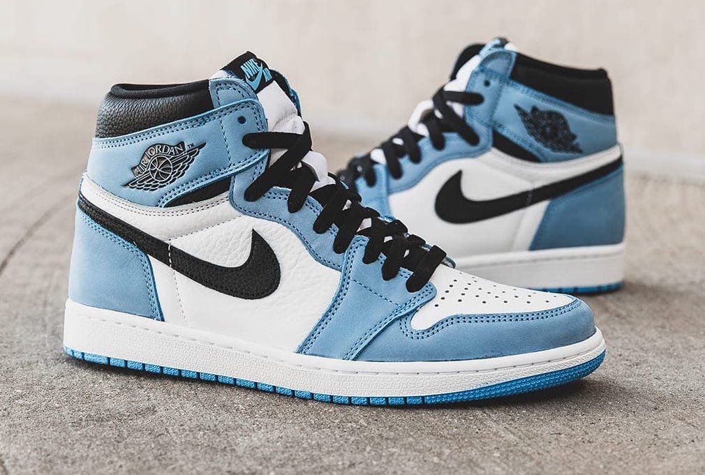
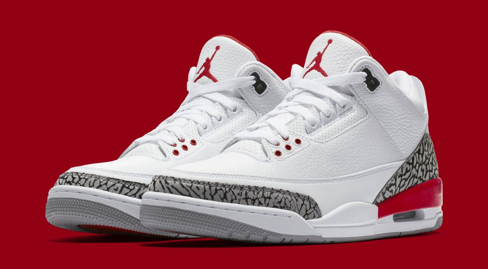
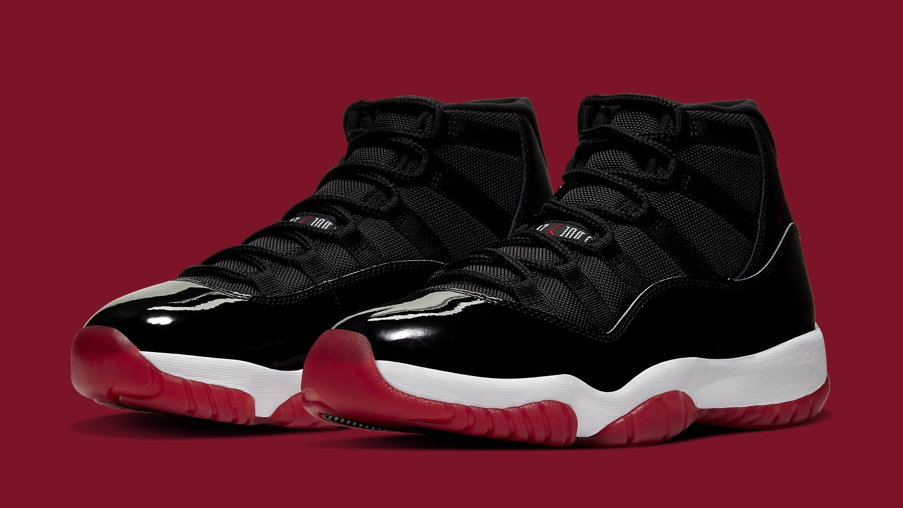
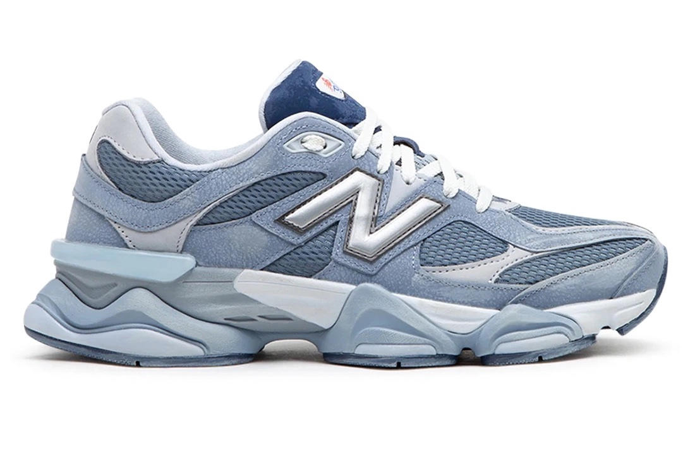
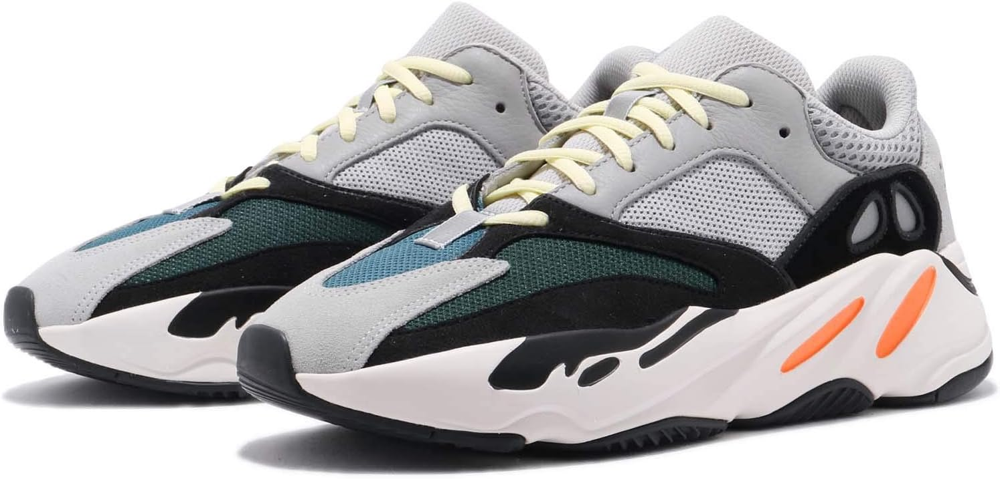

Made for Sneakerheads by Sneakerheads
They say money can't buy happiness but it surely can buy you sneakers!

Some Iconic Sneaker Silhouettes
- Air Jordan 1

The Air Jordan 1 made its debut in 1984. Michael Jordan first wore these iconic sneakers during his 11th NBA game where he played
vs the Philadelphia 76ers.
It wasn't until 1985, though, that the shoe was released for sales at the retail price of $65. This specific
silhouette was designed by Peter Moore.
- Air Jordan 3

The Air Jordan 3, one of my absolute favorites of all time, was initially released in 1988. This was actually the first Air Jordan sneaker
to feature the iconic jumpman logo.
This silhouette was designed by Tinker Hatfield. Tinker wanted to make a sneaker that was more so
"luxarious" than just a "basketball sneaker".
- Air Jordan 11

The Air Jordan 11 - perhaps the most iconic pair of Retro Air Jordans of them all some sneakerheads may argue. If you have ever
watched the movie Space Jam,
you may recognize these because they were worn by Michael Jordan throughout the entire show.
The 11s were also designed by Tinker Hatfield and made its debut in 1995.
These were also voted by the Sole Collector Magazine the
top shoe of all time. The retail price on these bad boys were a whooping $125. Today, these are priced at about $220.
- New Balance 9060

The New Balance 9060s are a much newer pair compared to the Air Jordans. It was actually just released in July of 2022. Some may
not consider this pair an
"iconic" pair of sneakers but for me, I feel that these will never go out of style. I own one pair of these
and to say that they are comfy would be an understatement!
It is not easy finding sneakers that are both stylish and comfortable.
These sneakers were designed by James Lee and Yue Wu.
- Yeezy Boost 700

The Yeezy Boost 700 made its debut in November of 2017. The pair shown in the image above is the Wave Runners, the first colorway of
this silhouette to ever be released.
It is no doubt that Yeezy sneakers shifted the sneaker culture. These sneakers are branded
by Adidas but designed by Kanye West, a rapper, fashion icon and media mogul.
The yeezy sneaker brand is also one of the most
comfortable pair of sneakers out there today.